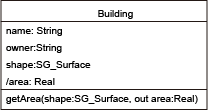

Modeler
応用スキーマ設計
はじめに
ここでは，応用スキーマの設計法を学びます．皆さんの研究や調査の対象になる，実世界に起きるものごとを抽象化して，それを一定のルールに従って形式的に表現すると，応用スキーマができます．応用スキーマが公開されることによって，データの多目的な活用が可能になります．地理情報標準では，応用スキーマを以下のように定義しています．つまり「一つ以上の応用システムによって要求されるデータのための概念スキーマ」です．gittok では，そのルールは統一モデリング言語 (UML) というグラフィック言語を使って表現します．言語というと，文章を思い浮かべるかもしれませんが，他者との間で意志の疎通をはかるための道具が言語であるとすれば，それは文章，つまり文字の配列とは限りません．漢字はもともと象形文字であり，それはグラフィックだったということも思い出してみましょう．グラフィック言語とは，一定の規則に基づいて作る図 (diagram) によって情報を伝達する言語です．機械の設計図や地図も，一定の規則に則って作られる言語表現と考えられます．
ここでは，まずUMLを使ったスキーマ表現法として，クラス図を紹介します．次に，一般地物モデルという，応用スキーマが守るべき規則を説明します．そして応用スキーマの詳細を解説します．さらに，Modeller ページの操作法を示します．しかし最初に，このページに関係する講義用スライドを読みましょう．
講義用スライド
01 空間思考
02 モデルとその形式表現
03 一般地物モデルと応用スキーマ
UMLとクラス図
UML (Unified Modeling Language) は，応用スキーマのような，モデルの形式表現のために開発されたグラフィック言語として，今日では情報システム開発の現場で広く使用されています．その仕様はOMGという非営利の標準化団体が提供しています．私たちは，応用スキーマの記述を行うためのルール（つまりスキーマのスキーマ）もUMLで記述します．gittok で使用している UML は Version 1.4 に準拠するものですが，これは著者がArgo UMLというフリーのソフトを使用しているためです．皆さんも UML で図を描くときは，ArgoUMLや，astah* community などのフリーソフトを使うことができますし，お金を払えば，より高機能なソフトを使うこともできます．
UML の知識を得たい人は，上に示す講義用スライドを見たり，参考書を手に取ってみるといいでしょう．ちなみに「クラス図」の書き方が理解できれば，gittok が理解しやすくなります．
なぜ，応用スキーマを UML で記述するのでしょうか．地理情報の記述や交換は，可能な限り，世界で共通に使用されている方式を使うといいということは，ご理解いただけると思います．独善的な方法を使うと，関係者がデータを共有するのが，困難になります．幸い，ISOが定めている地理情報の国際標準や，それに準拠する日本のJIS規格では，UMLで応用スキーマを記述することとしています．ただし，gittok では若干独自の規則を導入していますので，その部分は講義用スライドを参照してください．また，このテキストでも個々に説明します．
例えば下の図１の例は，建物 (Building) というものは，名称 (name)，所有者 (owner)，形状 (shape)，底地の面積 (area) で説明でき，形状 (shape) を入力して面積を出力する操作 (getArea) をもち，その結果は面積 (area) になる，と言っています．図中の属性欄にある area についている / は，値が別の所で作られるということを示しています．このような属性は派生属性といいます．操作の結果がareaに入ることは，gittok では応用スキーマを設計するときに，対応関係を宣言して示します．この部分は gittok 独自のルールといっても良いでしょう．このようなクラス図を記述するためには、UMLに加えて，地理情報のモデルの形式化について，下に示す一般地物モデルが示しているルールを，理解する必要があります．

図１．UMLによる簡単なクラス図の例
一般地物モデル (General Feature Model)
実世界の現象の抽象概念を地物といいます．例えば台風や津波のような自然現象，道路や建物のような人工構造物，そして国境や土地利用規制の範囲など，人間が考えた想像上の線や領域などが上げられます．ところで地物は，大きく分けて２つの側面からみることができます．１つは型 (type) として見ること，もう１つは個物としてみることです．例えば，「あれは橋だ」という表現は，目の前にあるものはどのような種類のものか，つまり目の前にあるものの型（種類）を述べたことになります．次に，「あれはレインボーブリッジだ」というときは，目にに見えるものは，どの個物であるかを，ものがもつ名称という性質をつかって述べたことになります．個物は，型で分類される，型の実例とも考えられるので，インスタンス (instance)といわれます． ここでは地物型とその記述のためのルールである一般地物モデル (General Feature Model: GFM) について説明します．インスタンスの記述法については，Editor ページで説明します．
まず，UMLは一般的な目的で使用する言語なので，地理情報特有のルールについては，何も示していません．そこで，UMLの規則のもとで，地理情報特有のルールを作り，それを使って応用スキーマを記述することになります．逆に言えば，地物型を含むクラス図（応用スキーマ）を描くためには，GFMに従うべきであり，さらにGFMはUMLの文法に従って定義される，と考えます．応用スキーマは，実世界の現象を抽象化した地物と地物同士の関係を示すモデルです．GFMはそのモデルを記述するためのモデル，UMLはGFMが準拠するモデルということになります．ですから，応用スキーマにとって，GFMはモデル，そしてUMLはメタモデルです．
図２．gittok で使用する一般地物モデルの全体構成
一般地物モデルは，応用スキーマを記述するためのモデル，言い換えれば規則です．この規則は，ISO 19109 - Rules for Application Schemaを単純化し，さらに gittok 用に設計し直したものです．図2の中心に位置するクラスは地物型と関連型です．また，これらを保持する応用スキーマ型があります．地物型と関連型は,個々の地物や関連を特徴付ける属性型と操作型を持ちます．ここで属性とは，ものがもつ固有の性質のことです．また操作とは，適当なアルゴリズム，つまり計算の手順を実行して属性を得る行為（もしくは方法）のことです．また，属性と操作をまとめてプロパティといいます．操作を実行するためには入力データとしての属性が必要になりますが，それは特に操作の引数 (argument) と呼ばれます．その引数が，既存の地物型や関連型のどの属性と対応するかを示すのが，引数・属性ペア (ArgAttPair) です．以後，GFM に含まれるクラスとそれらの関係について解説します．
応用スキーマ (ApplicationSchema)
上記の図２で示したクラス図で一番上に表示されているクラスはApplicationSchemaという名前をもっています．このクラスは応用スキーマを記述するためのルールを示しており，そのインスタンスとなるクラスが応用スキーマです．AppliationSchema のように，クラスを記述するためのルールを示すクラスは，メタクラスといいます．応用スキーマは複数の地物型 (FeatureType) と，複数の地物関連型 (AssociationType) をもつことができます．いま，「複数の」と言いましたが，これは「一つ以上の」と同じ意味です．また，「ことができる」と言いましたが，これは「そうではない」場合があることを認める表現です．例えば地物同士に関連がなければ，AssociationTypeは応用スキーマには含まれません．
地理情報システムは従来から，地物の属性を使って，空間解析と呼ばれる操作を実行させて，なんらかの知見を得るという方法を使ってきました．なぜ，属性と操作（まとめてプロパティといいます）があれば，地物や地物同士の関連を記述することができるのでしょうか．例えば古代ギリシャの哲学者アリストテレスは，物事の認識について，以下の様に考えたと言われています．
実世界の現象は個物として，または概念として捉えることができる．前者は命題（意見や見解のこと）の主語になり，後者は述語になる．例えば「ソクラテスは人間である，」という命題において，ソクラテスは個物であり，人間は概念である．前者は第一実体，後者は第二実体という．述語になるものは第二実体だけではない．アリストテレスは第二実体を含む１０種類の プロパティ が述語になるとした．それは，第二実体，いつ，どこ，量，質，保持するもの，姿勢，能動，受動，そして他者との関係である．ところで，第二実体が主語になることがあるが，そのときは，述語になる第二実体はより抽象度の高い第二実体である．例えば「人間は動物である」など．
この説明を地物とその関連の見方に当てはめると，いつ，どこ，量，質，保持するもの，そして姿勢は，地物の属性です．能動と受動は地物の振る舞い，言い換えれば操作です．そして他の第二実体との関係は関連性の記述といえるでしょう．さらに第二実体が主語になるときの，述語である第二実体との関係はより抽象度の高い実体との関係です．これは継承関係とか親子の関係などと呼ばれます．UMLや一般地物モデルは，このような考え方に基づいて作られています．
属性
name
応用スキーマの名前．
関連
featureTypes
応用スキーマは一つ以上の地物型をもつ．
associationTypes
応用スキーマは複数の地物関連型をもつことがある．Phenomena in the real world can be recognized as individual or concept. An individual is a subject of a proposition (idea, estimation, …) and a concept is a predicate. For example, Socrates is a subject and human being is a predicate in the proposition "Socrates is a human being." Aristotle called indivisual and predicate by the terms "primary substance" and "secoundary substance". While a predicate is not only scondary substance but also quantity or qualification or a relative or where or when or being in a position or having or doing or being affected. To give a rough idea, ideas of substance are man, horse; of quantity: four foot, five foot; of qualification; white, grammatical; of a relative: double, half, larger; of where: in the Lyceum, in the market-place; of when: yesterday, last year; of being in a position: is-lying, is-sitting; of having: has-shoes-on, has-armour-on; of doing: cutting, burning; of being-affected: being-cut, being-burnt. (Aritotle, Categories, 1b25 - 2a4).
Both doing and being affected are operations. Having is association between other objects. quantity, qualification,being in a position, when and where are attributes. Secondary substance is a parent concept. The relationship between primary substance and secondary substance is an inheritance. Consequently,
地物型 (FeatureType)
ここに示したFeatureTypeは，このクラスが示すルールに従って地物型の定義を行うべし，というルールを表します．つまり地物型というクラスを定義するためのメタクラスです．ところで，地物型 の名称は，誤解を招くといけませんので，一つの応用スキーマの中には，同じ名前 (name) の地物型が複数存在してはいけません．また英語で表現するときは頭文字は大文字にします．それによって地物型と，それがもつ固有の特性であるプロパティ (property) を見分けることができます．すでに述べたようにプロパティは，属性 (attribute) と操作 (operation) に分けることができます．そして，英文字を使う場合，プロパティの名前の頭文字は小文字にします．属性は静的なプロパティで，名前，色，材質，サイズなど様々なものが考えられます．操作は動的なプロパティで，入力されるパラメータを使ってその都度処理した結果を返す働きがあります．
属性
isAbstract
地物型は抽象型または具象型です．抽象型とはインスタンスをもたない型です．例えば，行政境界も，植生境界も，土地利用境界もみな，「境界」であり境界ならどのようなものでも持つプロパティを持ちます．しかし，境界という地物が実際の世界に存在するわけではなく，実際の世界には行政境界や植生界のインスタンスとして現れるとすれば，境界は抽象型であり，行政境界や植生境界などは，境界のプロパティを継承する下位の具象型になります．地物型が抽象型になる場合は，ブール値をとる isAbstract は真 (true) です．具象型の場合は偽 (false) です．
name
地物型は名前をもちます.
definition
名前だけでは，ユーザに充分な理解が得られないかもしれないので，応用スキーマの論議領域で設定される定義 (definition)を示す文章を与えることが，できます．
proxyName
地物を代理する属性を proxy といいます．地物を指定して，それをGUI上に表示するときは，proxyの型に応じた表現を行います．例えばproxyが文字列のときは一覧表が現れ，幾何属性のときは図面が現れます．proxyNameはその属性型の名前です．gittok では，現在幾何属性と文字列が proxy になることができます．proxy は，地図の要素となる記号や，名前の一覧表から地物インスタンスを検索し，後で解説する「関連型」のインスタンスによって，from地物とto地物をつなぐときに使用します．従ってインスタンスは，検索もれが起きないように，必ずproxyになるユニークな属性値を持たなければいけません．
関連
parent
地物型は，他の地物型と汎化と特化の関係（継承関係）をもつことがあります．上記の例でいえば，境界は行政境界や植生境界の上位型 (parent)になります．上位型になるということは，下位の型は上位の型のプロパティを持つ，言い換えれば，継承するので，この関係は継承関係 (inheritance) とも呼ばれます．
children
行政境界などは，特殊な境界として，境界の下位型 (children) になって，上位型のプロパティを継承します．下位から上位を見た関係は汎化関係ですが，上位から下位を見た場合は，特化の関係と言います．例えば「境界を特化した型の中には行政界がある．」というような表現をすることがあります．
attributeTypes
地物がもつ，特有の性質を属性といいます．例えば，その地物固有の名前，長さ，高さ，材質など，たいてい属性は複数あります．attributeTypesは複数の属性の型 (AttributeType) を記述するためにあります．
operationTypes
地物固有の属性を，それが必要になったときに，任意の処理を行って得る行為を操作といいます．地物は複数の操作をもつ可能性があります．operationTypesは複数の操作の型 (OperationType)を記述するためにあります．
links
地物型が，他の地物型と関連するときは，関連型を通して行います．linksを使えば，関連型を介して複数の地物型との関連を定義できます
linkedBy
地物型が，別の地物型から関連されるときは，関連型を通して行います．linkedByを使えば，１つの地物型からの関連を定義できます．
関連型 (AssociationType)
関連（Association）とは，地物どうしの対等な関係のことです．関連も実世界に生起する現象です．地物型はlinksによって，一つ以上の関連型と結びつくことができます．つまり，地物は複数の種類の地物と関連を介して結ばれます．例えば，学校は校舎，体育館，校庭などと関連する，というようにです．地理情報標準では，関連型は地物型の下位型として定義していますが，構造が複雑になるので， gittok では独立の型にしています．
属性
name
関連型は名前をもちます.
definition
名前だけでは，ユーザに充分な理解が得られないかもしれないので，定義 (definition)を示す文章を与えます．
roleName
相手の地物型と，どのような役割のもとで結びついたかを明確にするため，役割名(roleName)が使われます．例えば建物は校舎，駅舎，倉庫といった役割名を持つことができます．
style
下で説明するfromインスタンスが0個以上のtoインスタンスと結びつく方法は，styleで示します．これが 合成 (composite) である場合は，fromインスタンスが消滅すると，関連づくtoインスタンスは全て消滅します．そのため，合成は強い関連ともいわれます．なお，関連には集成 ないし集約と呼ばれる関連 (aggregation)がありますが，普通の関連との区別があいまいなため，gittok では普通の関連に含めてしまっています．なお現状，composite の指定はできますが，扱いはassociation と同じです．
multiplicity
結びつく地物のインスタンスが複数あり得るときは，多重性があるといい，ここでその指定を行います．
関連
from
関連する地物型はfromによって示されます，
to
関連される地物型はtoによって示されます．
attributeTypes
関連がもつ，特有の性質を属性といいます．例えば，その関連固有の名前，地物どうしの関連に関わる，例えば両者の隔たりを示す距離など，たいてい属性は複数あります．attributeTypesは複数の属性の型 (AttributeType) を記述するためにあります．
operationTypes
関連は複数の操作をもつ可能性があります．operationTypesは複数の操作の型 (OperationType)を記述するためにあります．
属性型 (AttributeType)
属性型は，地物や関連の属性を定義する型です．「赤い自動車」は，色という属性をもつ自動車という地物と考えられます．そして色は文字列というデータ型で表されるかもしれません．従って，この場合，自動車の属性は，属性の名前が色，属性のデータ型が文字列になります．しかし，上部が白で下の方が赤くぬられているような場合は，色という属性は多重度をもつことになります．ところで，車高という属性がある場合，そのデータ型は実数になるでしょうが，それがメートルなのか．センチメートルなのか，つまり単位が必要になります．さらに，属性は直接値を与えられる場合と，操作の結果与えられる場合があります．そこで，属性型は以下の要素で定義されます．
属性
derived
もしこの属性のとる値が，操作の戻り値になる場合，そのような属性は派生属性 (derived attribute) と呼ばれます．
dataType
属性を表現するためのデータ型です．
multiplicity
属性値が複数になる可能性があるときは，これが真になります．そうでなければ false です．
unit
属性値が計量単位をもつ場合は，任意の文字列で指定します．gittok では，計算にあたり，単位のチェックはしませんので，気をつけてください．
ところで，属性のデータ型は，以下に示す空間属性型，時間属性型，場所属性型及び主題属性型に分類できます．
空間属性型 (Spatial attribute type) ：空間的な性質（位置，形状）．２次元の幾何空間では，点 (SG_Point)，曲線 (SG_Curve) 及び曲面 (SG_Surface) などの型がこれにあたります．ここでSG_という接頭辞は空間の幾何 (Spatial Geometry) という意味です．
時間属性型 (Temporal attribute type) ：時間的な性質（時点，継続期間）．１次元の時間幾何空間では，瞬間 (TG_Instance), 期間 (TG_Period)がこれにあたります．現状，gittok では，時間属性を利用することはできません．
場所属性型 (Place attribute type) ：空間属性も時間属性も，ある空間の中を占める場所を示しますが，間接的に場所を示すのがこの属性です．住所，郵便番号，地番のような地理的な場所を示す情報は地理識別子 (geographic identifier) と呼ばれます．また，URLのように，仮想的な空間の場所を示す情報も，場所属性として扱います．gittokでは，場所属性として，住所 (address)，WebサイトのURL，画像URL (ImageLocation)，映像URL (VideoLoation)，音声URL (SoundLocation)を利用できるようにしています．実世界の中の場所や仮想世界の中の場所を合わせて，Placeと呼びますが，gittok では，実空間及び仮想空間中の場所をあわせて Place 属性と呼びます．ちなみにISO/TC 211が制定している ISO 19155: 2012 - Place identifier (PI) architectureでもplace を"identifiable part of any space"と定義しています．
主題属性型 (Thematic attribute type) ：主題とは，情報の意図，題目を端的に示す言葉を指しますが，ここではその地物を端的に示す言葉という意味でとらえます．空間，時間，場所以外の，その地物を端的に示す属性は主題属性と呼ばれ，名前，サイズ，色，材質など，論議領域によって，様々な属性が考えられます．
ここで紹介した様々な属性については，Attribute Type Designer の項で、より詳細な解説を行います．
操作型 (OperationType)
操作 (operation) は，on demand な属性とも考えられます．例えば，建物の形を示す多角形を与えられて，その建物の面積を返すとか，ネットワーク，出発点，目的地を与えられて，最短経路を示す曲線を返すとか，ある地域を指定して，その地域と最も類似の特性をもつ地域を返すとか，様々な操作が考えられます．これらの操作に地球上の位置が関係する場合は，空間解析 (Spatial Analysis) ともいわれます．操作は，その名前，入力される引数 (argument) 及び戻り値の型 (returnType) などで定義されます．また，戻り値が入る属性を指定することができますが，このような属性は派生属性と呼ばれます．
操作を実行するプログラムは，必要に応じて様々な地物の操作として共有できるとよいでしょう．そこで，あらかじめ操作を実行するためのプログラムを作成しておき，その引数と戻り値が，地物型がもつどの属性に対応するかを選択することによって，実際の操作が実行できるようにすると便利です．gittok では，操作に ArgAttPair を参照し，そこに，あらかじめ決められた操作の引数 (argumentType)と，地物の属性 (attributeType)との対を定義しておくようにします．
属性
type
この操作を含む操作クラス（型）の型名です．
name
操作の名前です．
returnFATypeID
戻り値が所属する地物または関連の型のIDです．
returnAttributeType
操作の結果がもつデータ型です．
returnAttributeName
操作の結果を収納する属性の名前です．この属性は上記のreturnTypeを型としなければいけません．
操作が実行され，戻り値が得られると，gittok はreturnFATypeID を使って，応用スキーマから戻り値が入る地物型または関連型の定義を得ます．そして，returnAttributeType を見て，データ型が一致することを確認した上で，returnAttributeName が示す変数に，戻り値を確認します．
関連
arguments
操作を実行するための引数，及びそれに対応する地物属性が何かを示す引数と属性の対への関連です．
引数属性対の型 (ArgAttPair)
操作の引数は，操作を含む地物や関連の属性になります．また，関連の操作の場合は，from地物，to地物の属性も引数になることがあります．
属性
fromTo
この属性は，引数と対応する地物属性が，自身が含まれる地物ないし関連に含まれる場合は"self"，関連の操作の場合は，from地物に含まれる場合は "from"，to地物に含まれる場合は "to" になります．
関連
argumentType
操作の引数は名前，データ型，多重度及び単位で定義できますので，それ自体が属性型をとります．この関連は，引数を定義する属性型への関連です．
attributeType
引数に対応する，地物又は関連の属性を示す属性型への関連です．
引数に対応する属性は，引数を含む地物（関連）のものか，from側の地物のものか，to側の地物のものかが分かるようにしておきます．例えば，建物と，その前面にある道路上にある街路灯までの距離をもとめる，という操作を distanceStoP という関連型がもっているとします．このとき，この操作は，建物の形状 (from) と街路灯の位置 (to) を引数にして，長さを求め，それを関連の属性としての「距離」とするでしょう．
操作の種類や空間解析については Analyst ページで、より詳細の説明を行います．
Modeler ページ の操作
図３．Modeler ページの操作画面
上に示した図3は，GFMの中心となる地物型及び関連型，言い換えれば，地物及び関連を定義する上でのルールの骨子を示しています．地物型は親子の継承関係をもつことができ，親がある場合は一つに限るけれど，子となる地物型は複数あってもよいことが，地物型の自己関連によって，示されています．また，地物型は関連型を通じて別の地物型と関連の関係をもつことができます．そのことは，linksとlinkedByという役割で明示されています．一方関連型は，一つの地物型から (from) 別の一つの地物型に (to)関連することを示すことができます．
例えば，道路と建物は人工構造物です．つまり両者とも人工構造物のプロパティを継承します．また，道路の沿道には複数の建物があり得ます．つまり道路は沿道建物という役割をもつ建物と関連します．型同士の関連は一対一ですが，一つの道路インスタンスとは，複数の建物インスタンスが関連するでしょう．このことは多重性といいますが，関連型を定義するときに示します．
ところで，既に説明したことですが，地物型や関連型は属性と操作をもつことができます．gittokでは，図3に示したページのFeatureType及びAssoicationTypeがボタンの働きをもつので，これらの上にカーソルを持っていって，クリックすると，それぞれの型の詳細な定義ができるようになっています．その中で，属性と操作の定義を行います．
FIELDS
application schema
セーブした応用スキーマのファイル名がここに，表示されます．
BUTTONS
FeatureType
地物型の定義と編集と行うFeature Type Modelerを起動します．
AssociationType
関連型の定義と編集を行うAssociation Type Modelerを起動します．
open
作成した応用スキーマが入っている外部ファイル（.aps）を指定し，それを編集可能にします．
save
作成した応用スキーマが入っているファイルを指定し，それを外部に保存します．ファイル名にはならず.apsという接尾辞を付けて下さい．保存するとapp.schema欄にファイル名が表示されます．
日本語
今あなたが読んでいるドキュメントが表示されます．
English
You can read the tutorial written in English.